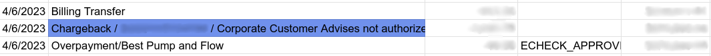

Configuración¶
Ver también
Pestaña de credenciales¶
Odoo necesita sus claves y credenciales API para conectarse con su cuenta de Authorize.Net, estas son:
ID de inicio de sesión API: el ID que se usa solo para identificar la cuenta con Authorize.Net.
Clave de transacción API
Clave de firma API
Clave de cliente API
Para obtenerlas, inicie sesión en su cuenta de Authorize.Net, vaya a , genere su clave de transacción y clave de firma, y péguelos en los campos relacionados en Odoo. Posteriormente, haga clic en Generar clave de cliente.
Importante
Si está probando Authorize.Net con una cuenta sandbox , cambie el Estado a Modo de prueba. Le recomendamos hacerlo en una base de datos de prueba de Odoo, en vez de hacerlo en su base de datos principal.
Si estableció el Modo de prueba en Odoo y usa una cuenta de Authorize.Net en lugar de una cuenta sandbox, aparecerá el siguiente error: El ID del comerciante o su contraseña no es válida o la cuenta está inactiva.
Pestaña de configuración¶
Hacer una retención de tarjeta de crédito¶
Con Authorize.net, puede activar la captura manual. Si es así, los fondos se apartan por 30 días en la tarjeta del cliente, pero no se hace el cargo todavía.
Advertencia
Después de 30 días, Authorize.net anula de forma automática la transacción.
Ver también
Pagos ACH (solo para Estados Unidos)¶
El ACH es un sistema electrónico de transferencia de fondos utilizado entre cuentas bancarias en Estados Unidos.
Configuración¶
Para hacer que los clientes puedan pagar con el ACH, inicie sesión en el servicio de eCheck de Authorize.Net. Una vez que tenga activado el eCheck, duplique el proveedor de pago previamente configurado de Authorize.Net en Odoo en . Luego, cambie el nombre del proveedor para diferenciar las versiones (por ejemplo, Authorize.net - Bancos).
Abra la pestaña de Configuración, establezca el campo de Permitir pagos desde en Cuenta bancaria (solo E.U.A).
Cuando esté listo, cambie el Estado del proveedor a Habilitado para una cuenta normal o en Modo de prueba si es para cuenta sandbox.
Exportar desde Authorize.Net¶
Para exportar un estado de cuenta:
Inicie sesión en Authorize.Net
Vaya a .
Defina un rango de exportación utilizando una liquidación por lotes de apertura y de cierre. Todas las transacciones dentro de ambas liquidaciones por lotes se exportarán a Odoo.
Seleccione todas las transacciones dentro del rango que desee, cópielas y péguelas en la hoja Descarga Informe 1 de la Plantilla de Excel de importación.
Example

En este caso, el primer lote del año (01/01/2021) pertenece a la liquidación del 31/12/2020, entonces la liquidación de apertura es del 31/12/2020.
Una vez que los datos estén en la hoja Descarga Reporte 1:
Vaya a la pestaña de Búsqueda de transacciones en Authorize.Net.
En la sección Fecha de liquidación seleccione el rango de las fechas de liquidación por lotes usado anteriormente en los campos Desde: y Hasta: y haga clic en Buscar.
Cuando se genere la lista, haga clic en Descargar en el archivo.
En la ventana emergente, seleccione Campos expandidos con respuesta CAVV/Separados por comas, active la opción Incluir encabezados de las columnas y haga clic en Enviar.
Abra el archivo de texto , seleccione Todos, copie los datos y péguelos en la hoja Descarga Informe 2 de la plantilla de Excel para importar.
Las líneas de tránsito se completan y actualizan automáticamente en las hojas tránisto para el informe 1 y tránsito para el informe 2 de la plantilla de Excel para importar. Asegúrese de que todas las entradas estén presentes y si no es el caso, copie la formula de las líneas previamente completadas de las hojas tránsito para el informe 1 o del 2 y péguelas en las líneas vacías.
Importante
Para obtener el balance de cierre correcto, no elimine ninguna línea de las hojas de Excel.
Importar a Odoo¶
Para importar los datos a Odoo:
Abra la plantilla de Excel para importar.
Copie los datos de la hoja tránsito para el reporte 2 y use la opción de pegado especial para pegar solo los valores en la hoja Importar de Odoo a CSV.
Busque las celdas azules en la hoja Importar de Odoo a CSV. Son asientos de devolución sin número de referencia. Puesto que no se pueden importar así, vaya a .
Busque la opción Cobrar transacción/Devolución, y haga clic ahí.
Copie la descripción de la factura, péguela en la celda Etiqueta de la hoja Importar de Odoo a CSV y agregue
Devolución /antes de la descripción.Si hay varias facturas, agregue una línea a la Plantilla de Excel de importación por cada factura y copie y pegue la descripción en cada respectiva línea de Etiqueta.
Nota
Para devoluciones/reembolsos combinados en los pagos, cree una nueva línea en la Plantilla de Excel de importación para cada factura.
Example
Luego, elimine las líneas de apuntes de transacción cero y transacción anulada, y cambie el formato de la columna Importe a Número en la hoja Importar de Odoo a CSV.
Regrese a y busque de nuevo las fechas de liquidación por lotes que uso anteriormente.
Verifique que las fechas de liquidación por lotes en eCheck.Net coincidan con las fechas de los pagos correspondientes que se encuentran en la columna de Fecha de la hoja Importar de Odoo a Odoo CSV.
Si no coinciden, reemplace la fecha con la que aparece en eCheck.Net. Filtre la columna por fecha y asegúrese de que el formato sea
MM/DD/AAAA.Copie los datos, incluyendo los encabezados de la columna, de la hoja Importar de Odoo a CSV, péguelos en un nuevo archivo de Excel y guárdelo como formato CSV.
Abra la aplicación Contabilidad, vaya a , seleccione la casilla Authorize.Net y haga clic en . Seleccione el archivo CSV y súbalo a Odoo.
Truco
Lista de códigos de reembolso de eCheck.Net